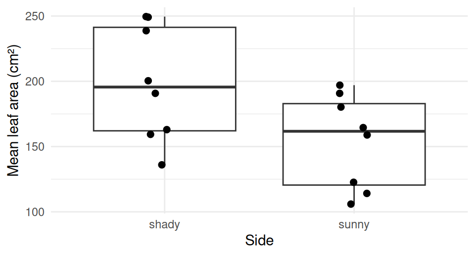
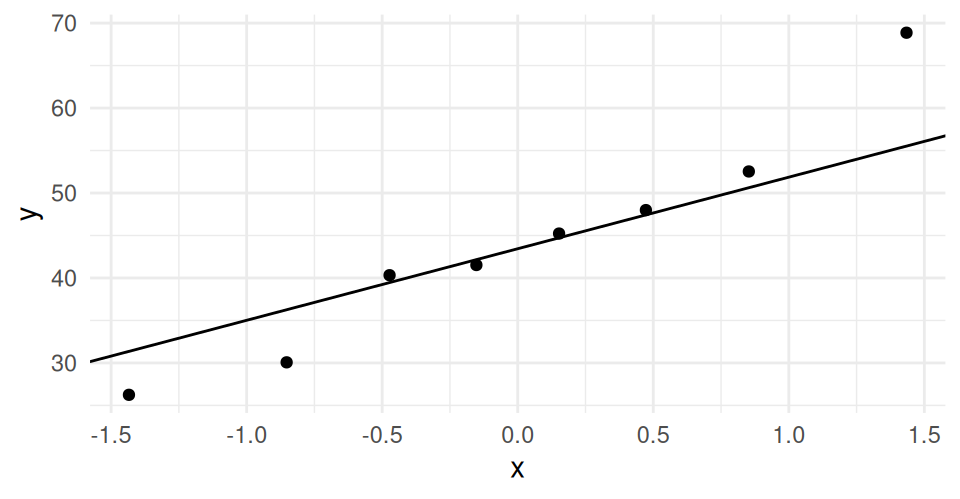
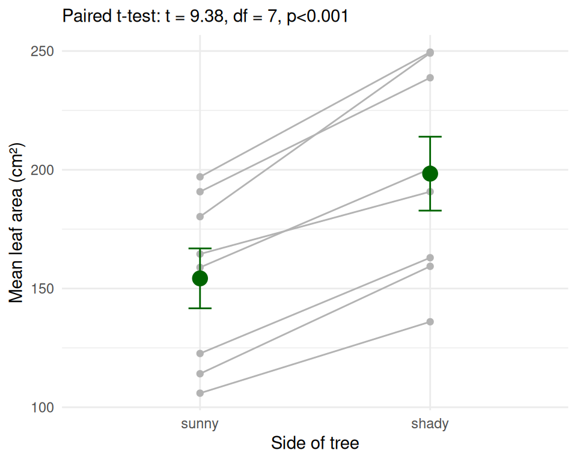

Reading the output, the power of pairing, and rank-based tests
2026-10-08
Today we go back and ask a harder question: did we even have 53 leaves’ worth of information?
Note
✅ Key idea for today
The design of a study decides which test is right. The same numbers can give two very different answers depending on whether you respect how they were collected.
t.test() output and make a decision (steps 4–5)summarize() at the top, then rerun the same codeNew tools today:
t.test(..., paired = TRUE)pivot_wider() — a sneak peekrow_number() — numbering rows within a groupscales::pvalue() — tidy p-values for plotswilcox.test() — rank-based testsReading:
We will cover: the t.test() code on the leaf data from last time — every line of the output, the decision, and a results sentence. Then we run the paired test on the same leaves, discover the data are pseudoreplicated, fix it with one summarize() at the top, and rerun the exact same code.
🛑 After this chunk: Activity Parts 1–6.
Welch Two Sample t-test
data: mass_g by shade
t = 0.35579, df = 42.527, p-value = 0.7238
alternative hypothesis: true difference in means between group shady and group sunny is not equal to 0
95 percent confidence interval:
-0.08392774 0.11987117
sample estimates:
mean in group shady mean in group sunny
0.5230357 0.5050640 Reading it top to bottom:
| Line | What it tells you |
|---|---|
t = |
gap between means ÷ noise |
df = |
degrees of freedom (Welch’s gives decimals — that’s normal) |
p-value = |
how often you’d see a gap this big if H₀ were true |
95 percent confidence interval |
plausible range for the true difference in means |
mean in group ... |
the two group means |
The rule (set before the test): α = 0.05
| If… | Decision | Meaning |
|---|---|---|
| p < 0.05 | Reject H₀ | the means differ |
| p ≥ 0.05 | Fail to reject H₀ | no evidence the means differ |
Leaf data: p is far above 0.05 → fail to reject H₀.
The confidence interval tells the same story: it runs from below zero to above zero, so “no difference” is a plausible value.
Important
“Fail to reject” is not “proved equal.”
It means this sample did not give enough evidence of a difference. Maybe there is none — or maybe we had too few leaves, or too much noise, to see it.
Keep that second possibility in mind — it is the whole story of the next few slides.
# A tibble: 1 × 3
t df p
<dbl> <dbl> <dbl>
1 0.356 42.5 0.724leaf_model$statistic, $parameter, $p.value — the $ pulls one piece out of the result, so you never retype numbers by hand.
The template:
[Finding] (Welch’s t-test: t(df) = X.XX, p = X.XX).
Our leaves:
Mean leaf mass did not differ significantly between shady and sunny sides (Welch’s t-test: t(42.5) = 0.36, p = 0.72).
Two consequences. The data are paired, and they are pseudoreplicated. Let’s take them one at a time.
A paired test needs the two groups side by side in one row, so we reshape:
# Number the leaves within each team and side ----------
leaf_wide_df <- leaf_df %>%
group_by(teams, shade) %>%
mutate(leaf_n = row_number()) %>%
ungroup() %>%
select(teams, leaf_n, shade, mass_g) %>%
pivot_wider(names_from = shade,
values_from = mass_g) %>%
mutate(diff = shady - sunny)
leaf_wide_df %>% head(4)# A tibble: 4 × 5
teams leaf_n sunny shady diff
<chr> <int> <dbl> <dbl> <dbl>
1 12345 1 0.4 0.39 -0.0100
2 12345 2 0.48 0.45 -0.0300
3 12345 3 0.34 0.6 0.26
4 12345 4 0.65 0.57 -0.0800row_number() numbers the leaves 1, 2, 3… inside each team and sidepivot_wider() then puts the shady and sunny leaf with the same number in the same rowdiff is the shady − sunny gap for that rowImportant
Look at what we just did. We paired shady leaf #1 with sunny leaf #1 because they happen to share a number. There is no reason those two leaves belong together — they’re just two leaves off the same tree.
Hold that thought.
Paired t-test
data: leaf_wide_df$shady and leaf_wide_df$sunny
t = 0.58003, df = 24, p-value = 0.5673
alternative hypothesis: true mean difference is not equal to 0
95 percent confidence interval:
-0.05746912 0.10239712
sample estimates:
mean difference
0.022464 R ran it without complaint.
df = 24, so it thinks it has 25 pairs of information⚠️ Watch out! Two teams turned in uneven numbers of leaves (4 shady / 3 sunny). Those leftover leaves had no partner to pair with, so
t.test()silently dropped 3 of them. It never warns you.
R will answer any question you ask it — including a meaningless one. Our job is to ask the right one.
The 6 shady leaves from team Oscar_Karl all came off one tree. They share that tree’s soil, water, light, age, and genetics. They are not independent — they are closer to one measurement taken six times.
Treating all 53 leaves as independent is pseudoreplication: it pretends we have far more information than we collected.
Count the real replicates. We did not sample 53 trees. We sampled 5.
| What the test used | What we actually have | |
|---|---|---|
| Two-sample | 28 + 25 leaves, df = 42.5 | 5 + 5 teams |
| Paired | 25 “pairs”, df = 24 | 5 pairs |
Important
Why this is serious. df drives the p-value. Inflate your df and every p-value you report is too small — you will claim differences that your data cannot support.
Here both tests said “no difference,” so nothing went wrong this time. That is luck, not method.
The fix is one line, and it is a line you already know: group_by() + summarize().
summarize() at the TopGo back to where you loaded the data and add the averaging step to the end of the chain. Keep the same name, leaf_df, and the same column name, mass_g:
# A tibble: 10 × 3
teams shade mass_g
<chr> <chr> <dbl>
1 12345 shady 0.448
2 12345 sunny 0.428
3 Oscar_Karl shady 0.400
4 Oscar_Karl sunny 0.339
5 fighting_mongooses shady 0.653
6 fighting_mongooses sunny 0.544
7 leaf_oglers shady 0.588
8 leaf_oglers sunny 0.599
9 still_loading shady 0.526
10 still_loading sunny 0.789One value per team per side. 10 rows — 5 teams × 2 sides.
group_by(teams, shade) — two grouping columns, the pattern from Summary Statisticsmass_g = mean(mass_g) — reusing the name means every line of code below keeps working.groups = "drop" tidies up afterwardsNote
✅ This is how real analysis works. You don’t write a new script. You go back to the top, fix how the data are built, and rerun everything — because the code below never cared how many rows came in.
# Keep a copy of the pseudoreplicated results ----------
pseudo_2s <- leaf_model
pseudo_paired <- leaf_paired_model
# Exactly the same two-sample code as before -----------
leaf_model <- t.test(mass_g ~ shade, data = leaf_df,
var.equal = FALSE)
# Exactly the same reshape + paired code as before -----
leaf_wide_df <- leaf_df %>%
group_by(teams, shade) %>%
mutate(leaf_n = row_number()) %>%
ungroup() %>%
select(teams, leaf_n, shade, mass_g) %>%
pivot_wider(names_from = shade,
values_from = mass_g) %>%
mutate(diff = shady - sunny)
leaf_paired_model <- t.test(leaf_wide_df$shady,
leaf_wide_df$sunny,
paired = TRUE)
leaf_wide_df# A tibble: 5 × 5
teams leaf_n shady sunny diff
<chr> <int> <dbl> <dbl> <dbl>
1 12345 1 0.448 0.428 0.0200
2 Oscar_Karl 1 0.400 0.339 0.0612
3 fighting_mongooses 1 0.653 0.544 0.110
4 leaf_oglers 1 0.588 0.599 -0.0102
5 still_loading 1 0.526 0.789 -0.263 Not one character of the test code changed. We only changed what leaf_df is — the two pseudo_ lines just park the old results so we can put them side by side in a moment.
row_number() is just 1 everywhere and pivot_wider() gives 5 clean pairs — one per teamdiff is finally a real quantity: this team’s shady side minus this team’s sunny sideLook at still_loading: a difference of −0.26 g, far bigger than anyone else’s.
# Pull all four results out of the four models ---------
tibble(
analysis = c("Two-sample, every leaf",
"Paired, every leaf",
"Two-sample, team means",
"Paired, team means"),
t = c(pseudo_2s$statistic, pseudo_paired$statistic,
leaf_model$statistic, leaf_paired_model$statistic),
df = c(pseudo_2s$parameter, pseudo_paired$parameter,
leaf_model$parameter, leaf_paired_model$parameter),
p = c(pseudo_2s$p.value, pseudo_paired$p.value,
leaf_model$p.value, leaf_paired_model$p.value)
) %>%
mutate(across(t:p, \(x) round(x, 3)))# A tibble: 4 × 4
analysis t df p
<chr> <dbl> <dbl> <dbl>
1 Two-sample, every leaf 0.356 42.5 0.724
2 Paired, every leaf 0.58 24 0.567
3 Two-sample, team means -0.184 6.52 0.86
4 Paired, team means -0.254 4 0.812Two things to notice.
1. The df collapse. 42.5 → 6.5. We did not lose data; we stopped double-counting it.
2. The difference changes sign. Shady leaves looked heavier (+0.018 g) with every leaf, and lighter (−0.016 g) once we averaged.
Why? Teams turned in uneven numbers of leaves. A team with 6 shady leaves counted six times in the raw mean, a team with 4 counted four times. Averaging first gives every team one equal vote.
Important
Pseudoreplication does not just break your p-value — it can point the difference the wrong way.
🛑 Do Activity Parts 1–6 now
Run the two-sample and paired tests on every leaf, then add the summarize() to the top of your data-loading chain and rerun the same code. Compare the four answers.
Same workflow, better data. We apply the same summarize() step to the sugar maple leaves, check the assumptions, run the two-sample and the paired t-test, see why pairing adds power, plot and report the paired result, and meet the rank-based backups.
🛑 After this chunk: Activity Parts 7–12, then Part B.
In class we test leaf area (total_area_cm2). Your hand-in does the same for leaf mass.
Note
✅ Same structure as our leaf data — but designed on purpose.
Leaves inside a tree-side, so it needs the same summarize() step. The difference: it is perfectly balanced — exactly 2 leaves everywhere, 8 trees, nothing uneven and nothing missing.
So no team gets an unfair vote, and the pairing is real by design: both sides come off the same tree.
summarize(), One More TimeTwo leaves off the sunny side of tree 3 share that tree’s soil, water, and light — not independent, exactly like our 6 leaves per team. So we start where we now always start: average up to the real replicate.
# A tibble: 4 × 3
tree side area
<dbl> <chr> <dbl>
1 1 shady 136.
2 1 sunny 106.
3 2 shady 200.
4 2 sunny 159.32 leaves → 16 rows. The real replicate is the tree, so we get 8 shady values and 8 sunny values.
Note
✅ The habit, not the trick.
Ask this of every data set before you test it:
What is the thing I actually sampled, and is there exactly one row per one of those?
Here: 8 trees sampled, so 8 values per side. Same two-column group_by(), same summarize(), same .groups = "drop".
Because this design is balanced, averaging won’t flip anything the way it did for our leaves — every tree already had an equal say. Here averaging buys us something different: an honest df, and a clean shot at the pairing.
Last lecture you checked all 32 leaves. We now test the tree means, so we check those:
# A tibble: 2 × 2
side shapiro_p
<chr> <dbl>
1 shady 0.338
2 sunny 0.316Levene's Test for Homogeneity of Variance (center = median)
Df F value Pr(>F)
group 1 0.4965 0.4926
14 A two-sample t-test needs:
Decision: a two-sample t-test is OK. Now we run it.
Important
Check → decide → test. Never the other way round.
Note
🔮 Predict first: Shady trees average bigger leaves. With only 8 trees per side, will the two-sample test be significant?
Welch Two Sample t-test
data: area by side
t = 2.2017, df = 13.426, p-value = 0.04573
alternative hypothesis: true difference in means between group shady and group sunny is not equal to 0
95 percent confidence interval:
0.9668576 87.2303924
sample estimates:
mean in group shady mean in group sunny
198.3656 154.2669 
Just barely significant — p only just under 0.05. The boxes still overlap a lot; a couple of different trees and we would have missed it. Is this the best we can do?
Same 16 numbers — but now each line is one tree.
Every line goes up. On every tree, the shady side has bigger leaves.
So why was the two-sample test such a close call?
group = tree tells ggplot which points to join with a line. scale_x_discrete(limits = ) puts sunny on the left.
A paired test compares the two sides within each tree, so tree-to-tree differences cancel out.
First, put each tree on one row with a sunny and a shady column, and compute the difference:
# A tibble: 8 × 4
tree shady sunny diff
<dbl> <dbl> <dbl> <dbl>
1 1 136. 106. 30.1
2 2 200. 159. 41.5
3 3 250. 197. 52.5
4 4 191. 165. 26.2
5 5 249. 180. 68.9
6 6 239. 191. 48.0
7 7 159. 114. 45.2
8 8 163. 123. 40.3pivot_wider() is a sneak peek — you’ll learn it properly in the Pivoting lecture.
Before (maple_tree_df) — one row per tree and side (16 rows)
| tree | side | area |
|---|---|---|
| 1 | shady | … |
| 1 | sunny | … |
After (maple_wide_df) — one row per tree (8 rows)
| tree | shady | sunny | diff |
|---|---|---|---|
| 1 | … | … | … |
names_from = side → the new column namesvalues_from = area → what goes in themLook at diff: every tree is positive.

A paired test needs the differences to be roughly normal — not each side.
No Levene’s test — there is only one set of numbers (the differences), so there is no second spread to compare.
Decision: a paired t-test is OK. Now we run it.
Note
🔮 Predict first: Every line went up. Will the paired p be bigger or smaller than the two-sample p?
Paired t-test
data: maple_wide_df$shady and maple_wide_df$sunny
t = 9.3808, df = 7, p-value = 3.255e-05
alternative hypothesis: true mean difference is not equal to 0
95 percent confidence interval:
32.98271 55.21454
sample estimates:
mean difference
44.09862 Overwhelmingly significant — p is more than a thousand times smaller. Same trees, same numbers.
paired = TRUE matches row 1 with row 1, row 2 with row 2 …mean difference = the average of the diff columnWarning
⚠️ Why not area ~ side here?
R does not allow paired = TRUE with a formula. That’s why we made the wide table first.
# A tibble: 2 × 4
test t df p
<chr> <dbl> <dbl> <dbl>
1 Two-sample (Welch) 2.20 13.4 0.0457
2 Paired 9.38 7 0.0000326Same 16 numbers. Same difference in means.
The paired test even has fewer df (7 vs. about 13) — and still wins easily, because the noise it removed mattered far more.
Important
The design picks the test. Both sides were measured on the same tree, so the data are paired. The two-sample test answers a question our design never asked.
| Paired ✅ | Not paired (two-sample) ❌ |
|---|---|
| Sunny and shady side of the same tree | Sunny leaves from some trees, shady from other trees |
| Before and after on the same fish | Fish from two different lakes |
| Left and right leg of the same person | Two groups of different people |
| Twins split between two treatments | Randomly assigned to two groups |
Ask: does each value in group 1 have a natural partner in group 2? If yes → paired.
Our class leaf data — each team sampled both sides of their own tree, so those data are paired too. That is why the paired test was the honest one there as well, once we had averaged each team’s side down to one value.
[1] "Paired t-test: t = 9.38, df = 7, p<0.001"We’ll put the test result on the figure, pulled straight from the model — no retyping numbers.
paste0() glues text and numbers into one piece of textmaple_paired_model$statistic → t, $parameter → dfscales::pvalue(..., add_p = TRUE) writes “p<0.001” instead of an ugly 3.3e-05# Each tree in grey + mean ± SE in color -----------------
maple_results_plot <- maple_tree_df %>%
ggplot(aes(x = side, y = area)) +
geom_line(aes(group = tree), color = "grey70") +
geom_point(color = "grey70") +
stat_summary(fun.data = mean_se, geom = "errorbar",
width = 0.1, color = "darkgreen") +
stat_summary(fun = mean, geom = "point",
size = 4, color = "darkgreen") +
scale_x_discrete(limits = c("sunny", "shady")) +
labs(x = "Side of tree",
y = "Mean leaf area (cm²)",
subtitle = paired_label) +
theme_minimal()
maple_results_plot
A box plot hides the pairing. This shows both: grey lines — every tree’s rise; green mean ± SE — the overall answer. aes(group = tree) sits only in geom_line(), so the green layers average over all trees.
The template:
[Finding] (paired t-test: t(df) = X.XX, p = X.XXX; mean difference = X.X units).
Our sugar maples:
Shady-side leaves were significantly larger than sunny-side leaves on the same tree (paired t-test: t(7) = 9.38, p < 0.001; mean difference = 44.1 cm²).
For the two-sample version, the test name changes and there’s no “mean difference” — give the two means instead.
Where each number comes from:
| In the sentence | In the output |
|---|---|
| t(7) | t = and df = |
| p < 0.001 | p-value = (tiny) |
| mean difference | mean difference at the bottom |
Always say which test — “t-test” alone doesn’t tell the reader whether the data were paired.
When the QQ plot and Shapiro-Wilk say the data are clearly not normal, use a test on ranks instead — the smallest value becomes 1, the next 2, and so on.
Wilcoxon rank sum exact test
data: area by side
W = 50, p-value = 0.06496
alternative hypothesis: true location shift is not equal to 0wilcox.test(); the statistic is W or V, not tLook what happened:
| Data roughly normal | Data clearly not normal | |
|---|---|---|
| Two independent groups | Welch’s two-sample t-test | Mann-Whitney U |
| Paired (natural partners) | Paired t-test | Wilcoxon signed-rank |
Tip
Normal enough? Use the t-test. It uses the actual measurements, so it has more power. Rank tests are the backup, not the default.
🛑 Do Activity Parts 7–12 now, then start Part B
Average the sugar maple leaves per tree and side, check the assumptions, run the two-sample and the paired t-test, compare them, make the results plot, write the sentences, and run the rank-based tests. Then Part B: the whole workflow on sugar maple leaf mass — that is what you hand in.
t.test() output: t, df, p, CI, means → decide → reportdf, and with uneven sampling they can flip the difference’s signsummarize() at the top — same leaf_df, same mass_g, rerun everything below unchangedR skills:
t.test(y ~ group, data, var.equal = FALSE)t.test(a, b, paired = TRUE)group_by(id, group) %>% summarize() — kill pseudoreplicationpivot_wider(names_from, values_from)geom_line(aes(group = tree))wilcox.test()Up next — Lecture 11: linear regression